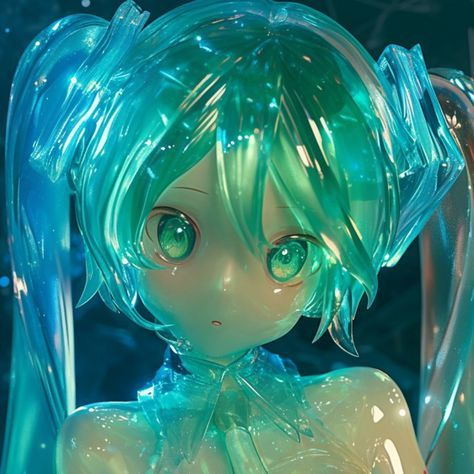

Bienvenidos a mi página personal
Cosenoidal es una página de carácter personal, artístico y divulgativo. El propósito de esta página es compartir conocimiento en las áreas de la computación, cultura, teoría musical y adquisición de idiomas, entre otros. La información se presentará por medio de artículos o páginas interactivas, con un enfoque en presentar la información de manera accesible y mantener una estética definida.
Sobre mí
Mi nombre es David, estudio Ingeniería en Computadores en el Instituto Tecnológico de Costa Rica. Me dedico principalmente a mi carrera y me gusta dedicar mi tiempo libre a escuchar música, tocar guitarra, estudiar algún idioma o hacer cosas como esta. No hace falta aclarar que mis principales intereses son la música, los idiomas y las computadoras.
Me fascinan las computadoras y lo que somos capaces de hacer con ellas. Poder comprender su funcionamiento, entenderlas y desarrollar su tecnología es mi motivación para estudiar mi carrera.
La música es mi pasión, supongo que es mi cosa favorita, es mi arte, es mi inspiración... Me gusta escuchar todo tipo de música; entre mis géneros favoritos se encuentran J-Rock, Salsa, Metalcore melódico, Shoegaze, Jazz Fusion, Art Pop y demás. Me gusta sentarme a escuchar atentamente todo tipo de música, conectar emocionalmente con su mensaje y su belleza, me gusta exponerme a géneros nuevos, sonidos diferentes y culturas desconocidas. Espero poder llegar a ser un buen músico, quiero hacer arte, quiero poder expresarme en la música, hacer obras hermosas, quiero ser capaz de crear belleza; entonces podrán llamarme artista.
Mi otro pasatiempo son los idiomas, o más bien, aprender idiomas. Decir esto da la impresión de que soy políglota, lamentablemente no es el caso. Los idiomas no me apasionan tanto como la música. A lo que más he dedicado tiempo es a estudiar la teoría de la adquisición de idiomas a través del input comprensible y a aprender las bases de múltiples idiomas en los cuales nunca llegué ni siquiera a un nivel elemental. Mi idioma nativo es el español, soy proficiente en inglés y sigo estudiando japonés, en el cual tengo un nivel básico.
Contacto
Pueden escribirme a mi correo electrónico: davidobando@protonmail.com.
Recomienden álbumes en RYM: TheDeGeO.
Vean mis proyectos en GitHub: TheDeGeO.
O vean mis publicaciones en Telegram: PTSD.